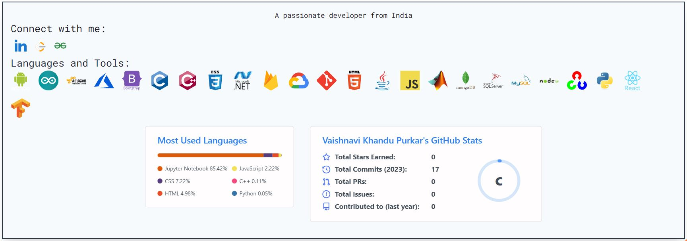
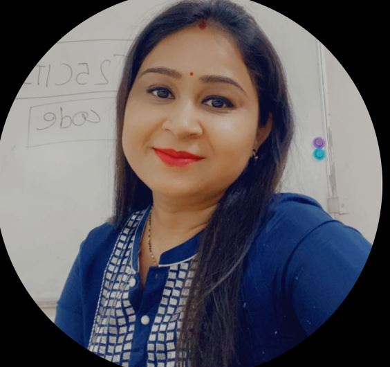

About
Hello there! I'm Vaishnavi Purkar, a final year Electronics and Telecommunication Engineering student with a passion for software development and a diverse skill set that encompasses various technological domains. Throughout my academic journey, I have dedicated myself to mastering the art of Electronics and Telecommunication Engineering. I find delight in understanding complex circuits, designing innovative hardware solutions, and exploring cutting-edge technologies that push the boundaries of modern communication systems. But my curiosity doesn't end there; I am equally captivated by the world of software development. From building dynamic web applications using the MERN stack to harnessing the power of AI and ML to solve real-world challenges, I've dived deep into the world of programming and its potential to shape our future. I take pride in my ability to bridge the gap between hardware and software, leveraging my expertise in both areas to create integrated and seamless solutions. Whether it's crafting an elegant user interface or optimizing code for better performance, I am driven by the pursuit of excellence in every project I undertake. Beyond my technical prowess, I believe that technology should serve a higher purpose to make a positive impact on society. I strive to apply my skills in ways that can enhance lives, improve accessibility, and contribute to the advancement of knowledge. As I embark on the cusp of graduation, I look forward to exploring new opportunities that challenge and inspire me. I am open to collaborations, internships, and projects that allow me to utilize my skills and continue my learning journey. When I'm not engrossed in the world of electronics or software, you can find me seeking adventure in the great outdoors, capturing moments through the lens of my camera, or delving into captivating books that expand my horizons.
Thank you for visiting my portfolio. I'm excited about the possibilities that lie ahead, and I'm eager to connect with like-minded individuals and organizations who share a passion for technology and its potential to shape a better tomorrow. If you'd like to collaborate, discuss opportunities, or simply chat, feel free to reach out. Let's create something incredible together! Warm regards, Vaishnavi Purkar
Resume
Vaishnavi Purkar
Upcoming Electronics and Telecommunication Engineer, AI-ML enthusiast, Software enthusiast
- Pune, India
- Vaishnavipurkar7@gmail.com
- https://www.linkedin.com/in/vaishnavi-purkar-4a9373230/
Education
Bachelor of Engineering in Electronics and Telecommunication
(July 2021 - June 2024)
SCTR'S Pune Institute of Computer Technology, Pune
Diploma in Electronics and Telecommunication Engineering
August 2018 - July 2021
Government Polytechnic Nashik (Autonomous Institute)
SSC
August 2018 - July 2021
Navrachana Vidyalaya, Nashik
Extra-curricular activities
- Contribution to website development at PICT InC Event 2023
- Active volunteer of PICT NSS Team
internships
Engineer Intern
June 2022 - August 2022
Vodafone Intelligent Solutions (VOIS), Vodafone Idea Solutions, India
- Coordinated with project members and built a project
- Built Brain tumor detection web App, using flask, python, JS
Future-Ready Talent Intern
February 2022 - Jun 2022
Microsoft- Virtual Internship
- Worked on cloud computing, Microsoft Azure technology.
- Built agricultural farming website called Agrowfarm..
- This website is helpful to customers to interact with farmers.
Projects
- MERN stack- Blog website
- Brain tumor detection web app using flask
- Android application development of course registration and library access for students
- Agricultural website development (Agrowfarm)
- Industrial parameter detection and prevention system using Arduino
- Milli-ohm meter
Achievements
- Awarded scholarship from "Lila Poonawala Foundation".
- 1st Rank in Diploma E&TC
- 6th Rank- first class with Distinction in SSC
- Agricultural website development (Agrowfarm)
- Industrial parameter detection and prevention system using Arduino

Testimonials and Events
As an NSS volunteer, I recently had the opportunity to volunteer in a blood stem cell testing event DATRI organized by the Pune Institute of Computer Technology and PICT NSS. DATRI is an organization that aims to help patients suffering from life-threatening blood disorders. It was an incredibly rewarding experience, and I'd like to share some of the highlights with you. At the event, we collected blood samples from donors to test their blood stem cell compatibility with patients who need a blood stem cell transplant. While we did not collect actual blood stem cells for donation, the samples we collected will help DATRI create a registry of potential donors that can be used to match patients with compatible donors in the future. As a volunteer, I assisted with the registration process and conducted health screenings and testing processes. Seeing so many people show up and volunteer their time and effort to make this process smoother was inspiring. Overall, throughout the day, my experience at the DATRI blood stem cell testing event was humbling and fulfilling. It was an honor to be part of a team of NSS volunteers. I hope to continue supporting similar events in the future and encourage others to do the same. If you're interested in learning more about blood stem cell donation or supporting DATRI's mission, I encourage you to visit their website and sign up to become a donor. Let's come together to make a difference in the lives of those who need it the most! #bloodstemcelltesting #DATRIevent #NSSvolunteer #makingadifference
NSS DATRI EVENT
Blood cell donation
Dear Vaishnavi, As a project mentor of the VOIS internship, I wanted to take a moment to express my sincere appreciation for the hard work and dedication you demonstrated during your internship with us. Your contributions to the team were invaluable, and we were truly impressed by the skills and knowledge you brought to the table. Specifically, I was impressed by your presentation and leadership skills. Your attention to detail, positive attitude, and willingness to take on new challenges made a significant impact on our team, and we are grateful for your contributions. I encourage you to continue developing your skills and pursuing your goals. Your passion and dedication will take you far, and I have no doubt that you will be successful in whatever you choose to do next. Thank you again for your hard work and dedication during your internship with us. We wish you all the best in your future endeavors. Sincerely, Deepika Singh (VOIS Mentor)
Deepika Singh
VOIS mentor
Contact
Location:
Pune, India
Email:
Vaishnavipurkar@gmail.com
Website:
https://www.linkedin.com/in/vaishnavi-purkar-4a9373230/
If you want to chat with me, feel free to drop me an email and I'll get back to you.
I could talk to you about technology, community building, diversity and inclusion, leadership, travelling, sports and more!